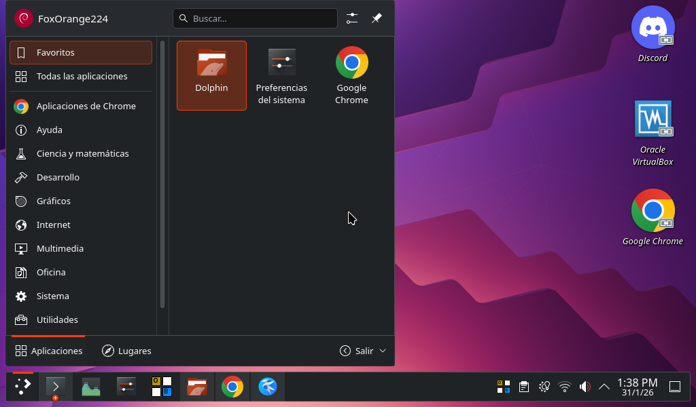

Linux: El Sistema que Mueve al Mundo
Publicado el 31 de Enero, 2026 | Por El Equipo de
FoxWeb
¿Qué es realmente Linux?
Linux es mucho más que un sistema operativo alternativo. Técnicamente, Linux es solo el
Kernel (el núcleo) - el software que gestiona los recursos del hardware y permite que
otros programas se ejecuten. Sin embargo, cuando la gente habla de "Linux", generalmente se refiere
a un sistema operativo completo basado en este kernel.
El proyecto Linux fue iniciado en 1991 por Linus Torvalds, entonces un estudiante
finlandés de 21 años. Lo que empezó como un hobby se convirtió en uno de los proyectos colaborativos
más grandes y exitosos de la historia de la informática.
La filosofía central de Linux es la libertad: libertad para usar, estudiar, modificar y distribuir
el software. Esto es posible gracias a su licencia GPL (Licencia Pública General),
que garantiza estas libertades a todos los usuarios.

Breve historia de Linux
La historia de Linux comienza con GNU, un proyecto iniciado por Richard Stallman en
1983 para crear un sistema operativo completamente libre. Cuando Torvalds lanzó el kernel Linux en
1991, combinado con las herramientas GNU, nació el primer sistema operativo libre completo.
Hitos importantes:
- 1991: Linus Torvalds anuncia Linux en un grupo de noticias
- 1992: Linux se licencia bajo GPL, garantizando su libertad
- 1993: Surge Slackware, la distribución más antigua aún activa
- 1996: Aparece KDE, el primer entorno de escritorio moderno
- 2004: Ubuntu lanza su primera versión, revolucionando la usabilidad
- 2007: Google anuncia Android, basado en el kernel Linux
- 2011: Linux domina el 91% de los supercomputadores del mundo
Las "Distros": Un sabor para cada uno
La magia de Linux está en su diversidad. Las Distribuciones (Distros) son versiones
completas del sistema operativo que incluyen el kernel Linux, herramientas GNU y software adicional.
Cada una tiene su propia personalidad y objetivos.
🐧 Para Principiantes
- Ubuntu: La distribución más popular, con excelente soporte y comunidad
- Linux Mint: Basada en Ubuntu, enfocada en simplicidad y elegancia
- Zorin OS: Diseñada específicamente para usuarios que vienen de Windows
- Pop!_OS: Orientada a desarrolladores y creativos, con herramientas especiales
⚙️ Para Usuarios Avanzados
- Arch Linux: Sistema rolling-release donde tú construyes todo desde cero
- Fedora: Vanguardista, con las últimas tecnologías y muy estable
- Debian: La "distro madre" de muchas otras, famosa por su estabilidad
- openSUSE: Potente herramienta de administración (YaST) y excelente para
servidores
🚀 Para propósitos especiales
- Kali Linux: Especializada en seguridad informática y pruebas de penetración
- Tails: Enfocada en privacidad y anonimato (se ejecuta desde USB)
- SteamOS: Optimizada para gaming en la plataforma Steam
*Captura de pantalla del KDE Plasma de FoxOrange224*

Arquitectura del sistema Linux
Linux sigue una arquitectura modular que permite una gran flexibilidad. Estas son las capas
principales:
1. Hardware
El equipo físico: procesador, memoria, discos, etc.
2. Kernel (Núcleo)
Gestiona el hardware, la memoria, procesos y seguridad. Es el "cerebro" del sistema.
3. Shell
La interfaz de línea de comandos que permite interactuar con el sistema (Bash, Zsh, Fish).
4. Sistema de Archivos
Estructura jerárquica que organiza los datos (ext4, Btrfs, XFS, etc.).
5. Entorno de Escritorio
La interfaz gráfica (GNOME, KDE Plasma, XFCE, etc.).
6. Aplicaciones
Software que usamos diariamente: navegadores, editores, reproductores, etc.
Linux vs Windows vs macOS
| Característica |
Linux |
Windows |
macOS |
| Costo |
Gratuito |
De pago |
Solo con hardware Apple |
| Seguridad |
Excelente (pocos virus) |
Buena (requiere antivirus) |
Muy buena |
| Personalización |
Total (cambia todo) |
Limitada |
Limitada |
| Estabilidad |
Excelente (pocos reinicios) |
Media (requiere reinicios) |
Buena |
| Compatibilidad de software |
Buena (alternativas libres) |
Excelente |
Buena |
| Soporte de hardware |
Muy bueno |
Excelente |
Solo hardware Apple |
| Comunidad |
Enorme y activa |
Grande |
Grande |
La terminal: Tu superpoder
A diferencia de otros sistemas, en Linux la terminal no es algo aterrador, sino una herramienta
poderosa que te da control total sobre tu sistema.
Comandos esenciales para empezar:
$ pwd # Muestra tu ubicación actual
$ ls # Lista archivos y directorios
$ cd nombre_directorio # Cambia de directorio
$ mkdir nuevo_directorio # Crea un directorio
$ cp archivo1 archivo2 # Copia archivos
$ sudo apt update # Actualiza lista de paquetes (en Debian y Ubuntu)
$ sudo apt install programa # Instala un programa
Ventajas de usar la terminal:
- Automatización: Puedes crear scripts para tareas repetitivas
- Eficiencia: Muchas tareas son más rápidas por terminal
- Control remoto: Administra servidores desde cualquier lugar
- Resolución de problemas: Información detallada de errores
Instalación paso a paso
Instalar Linux hoy es tan fácil como instalar Windows o macOS. Te guiamos paso a paso:
1. Elige tu distribución
Para principiantes recomendamos Ubuntu o Linux Mint.
2. Crea un USB de instalación
Necesitarás una memoria USB de al menos 4GB y el programa Rufus (Windows) o
BalenaEtcher (multiplataforma).
3. Prueba sin instalar
Arranca desde el USB y selecciona "Probar Ubuntu". Así puedes experimentar sin modificar tu equipo.
4. Instalación real
El asistente de instalación guiará todo el proceso. Es seguro e intuitivo.
5. Instalación dual (recomendado)
Puedes mantener Windows y Linux en el mismo equipo, eligiendo cuál arrancar al inicio.
Consejo: Haz una copia de seguridad de tus datos importantes antes de empezar.
¿Por qué deberías usarlo?
Linux ya no es solo para expertos. Hoy es una alternativa viable para cualquier usuario:
- Revive tu PC viejo: Con distribuciones ligeras como Xubuntu o Lubuntu, equipos
de hace 10 años funcionan como nuevos.
- Privacidad Total: Linux no te espía. No recopila tus datos para vender
anuncios. Tú eres el dueño de tu máquina.
- Personalización Extrema: Puedes cambiar absolutamente todo. Desde los iconos
hasta cómo se comportan las ventanas.
- Sin costo oculto: Es completamente gratis, sin suscripciones, sin versiones
"premium" limitadas.
- Gran seguridad: La arquitectura de permisos y el modelo de código abierto hacen
que Linux sea extremadamente seguro.
- Software libre de calidad: Alternativas gratuitas a programas de pago:
LibreOffice (Office), GIMP (Photoshop), Inkscape (Illustrator).
- Aprender habilidades valiosas: El conocimiento de Linux es muy valorado en el
mundo laboral IT.
Si buscas libertad, seguridad, velocidad y control sobre tu computadora, Linux es el camino a
seguir.
El futuro de Linux
Linux continúa creciendo y evolucionando. Estas son algunas tendencias para el futuro:
🌐 En todas partes
Linux ya está en el 100% de supercomputadores, 96% de servidores web, 85% de smartphones (Android), y
crece en el escritorio.
🎮 Gaming en Linux
Con Proton (de Steam) y mejor soporte de controladores NVIDIA/AMD, jugar en Linux es cada vez mejor.
📱 Convergencia
Proyectos como Ubuntu Touch y Plasma Mobile buscan unificar la experiencia entre escritorio y móvil.
🤖 IoT y dispositivos embebidos
Linux domina el mundo del Internet de las Cosas por su flexibilidad y bajo consumo de recursos.
☁️ Nube y contenedores
Docker, Kubernetes y la mayoría de la infraestructura cloud moderna corre sobre Linux.
Conclusión: Linux no es solo el pasado y presente de la informática, sino también su
futuro.
{kind=link}